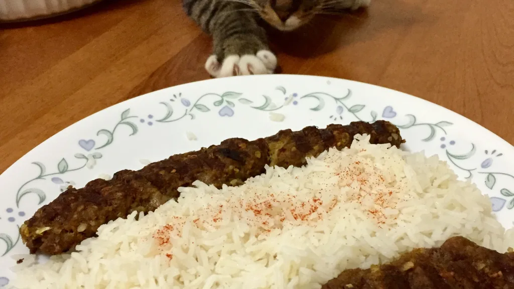

Kabab Kubideh

Description
Delicious Ground Beef skewers with Basmati Rice that
is cooked to perfection so you can taste the
succulent juices from the beef.
Ingredients
- 1 lb ground beef
- 1 medium onion, grated
- 1/4 cup breadcrumbs or 1/4 cup white flower
- 1 egg, slightly beaten (optional)
- 1 teaspoon sumac
<1i>1 teaspoon salt
- 1/2 teaspoon pepper
- 1 tablespoon lemon juice (fresh is best)
Steps
- Drain the juice from the grated onion very well.
- Mix all ingredients well; cover and refrigerate overnight.
- Divide the meat into 10-12 portions.
- Press each portion around long metal skewers and shape evenly
(you're looking for a sausage shape.
- Place the skewers a few inches away from the grill coals.
- Turn frequently to brown and then cook each side for a few
minutes.